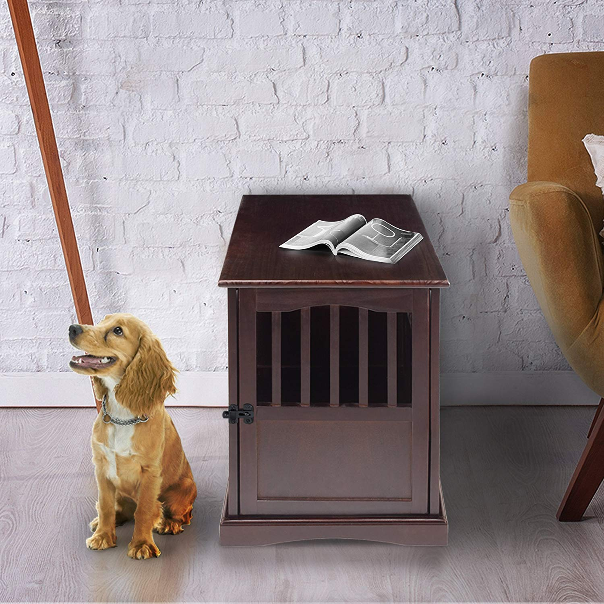
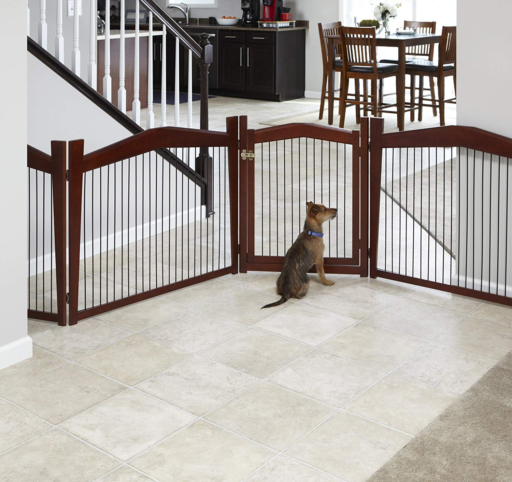
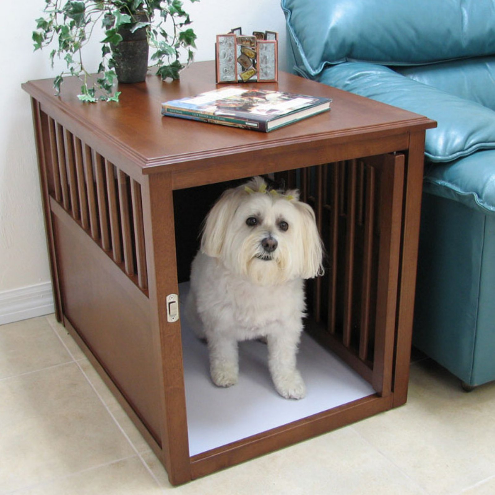
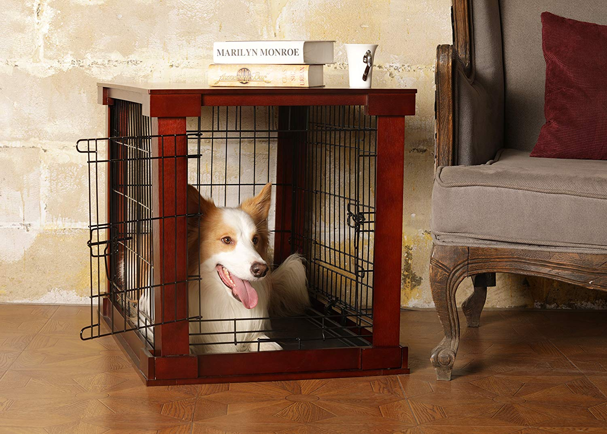

The Best Furniture Dog Crates

The right dog crate is instrumental in owning a dog. It gives dogs a place they can call their own and feel safe in, while also affording peace of mind to their owner. No more worrying if the TV will still be there after work. That's a relief.
The endless utility and convenience of a good dog kennel go a long way. Furniture dog crates, however, go even further. With a furniture dog house, you can eliminate that unseemly wooden or stainless-steel dog crate and embrace a new side table, end table, or nightstand. Whether it looks best in the living room or the office, these new age dog beds will significantly complement your home decor.
What is a furniture dog crate?
- A pet bed, dog crate, and end table in one.
- A durable wooden dog kennel that doubles as stunning home decor.
- A wooden dog crate available in many novel shapes and sizes
- The ultimate new age pet upgrade from the age-old stainless-steel dog crate.
What furniture dog crates do.
Regular dog crates take up much room. Whether it is for an extra-large dog or petite pooch, they make a ton of dead space. You can’t put anything on top of them! If you live in a smaller-sized home or an apartment, that’s costly real estate to waste, so don’t!
Dog crate furniture offers all the advantages of old-style crates with none of the impediments. Your furry friend will love the cozy comfort and luxury these end table dog crates provide, and you will relish at the utility of a new coffee table or nightstand in its place. It is safe to say that dog crate furniture is the seldom known cure to the ailment of spacial restriction. The many benefits these furniture-style pet cages offer is astounding. Dog owners and pet owners at large will appreciate their versatility:
- Furniture dog crates are available in many flexible sizes. This invaluable convenience allows for the perfect-sized home for your furry friend.
- Their superior manufacturing materials and construction are versatile and reliable. They are furniture. Sarge will struggle ripping it apart.
- They look incredible. A dog crate end table is inherently different from the dog crates of old. With the many options available today, the most stylish home decor dog crates will fit flawlessly inside the home next to any piece of furniture.
- These luxurious dog homes even come with a plethora of potential accessories. Try a comfortable dog bed for your furry friend to lounge on, an outer liner for protection and decorative expression, or a clip-on water bottle for heightened dog health.
Potential downfalls of furniture style dog crates.
Improper crate training. It is laborious, but if your tail-wagging canine friend is not crate trained, they will not use it. These crates were not designed for training in any way. Please do not use them for this purpose.
Assembly required. Naturally, an end table crate will need some assembly. Proper assembly is vital on these pet crates. Not only might you spill your coffee when the end table wobbles, but it can collapse, severely injuring your beloved dog.
They are choking hazard. Like steel dog crates, be cautious with collars and leashes. Not only can they be precarious around the wood dog crate, but they can also be fatal. Take care not to strangle your dog.
Top 4 furniture dog crates.
Now that wooden crates 101 is over, you have all the knowledge you need for a great buy. These four fashionable chic dog crates are hand-picked by our team just for you. Check them out!
Best Seller - Casual Home Wooden Pet Crate
This wooden and slatted dog crate is the perfect refuge for the dog in your life. It comes in five sizes and four colors, including the famed espresso finish, that is guaranteed to make your home divine as a table top or by the front door. Casual Home has been in the business for over forty years. Their products are sustainably sourced, made of authentic, solid wood, and come with many functional features.
Pros
- A lockable door latch for security and peace of mind.
- High airflow throughout the wooden dog crate’s encompassing slats.
- Solid wood construction makes it remarkable chew resistant.
- Lightweight and easy to assemble for ultimate convenience.
- Sizes available for small dogs under ten pounds to extra-large dogs up to ninety pounds.
- Relatively inexpensive.
Cons
- Easy to scratch the wood finish.
- No crate cover included.
Most configurable - Merry Pet Hi Gate Pet Gate
The utility of a product makes every purchase a better one. This dog crate is an excellent example of precisely that. This configurable dog crate is a transformer. It doubles as a gate, saving the fervent pet owner even more precious space. With this dog kennel, the dog's sanctuary doubles as a safe play space. Merry products are well known for their robust designs, pet EcoFlex materials, and decorative pet supplies.
Pros
- Includes solid wood veneer allowing surface use to be optimized.
- Doubles as a gate for closing off rooms and doorways.
- Includes a removable tray beneath it to protect your beautiful floor and make cleaning effortless with just a damp cloth.
Cons
- The size and color options are limited.
- Some customers complain about the material quality.
- No crate cover included.
Thomas' choice - Crown Pet Products Wood Pet Crate End Table
Crown Pet Products is a family-owned company known for using only the choicest materials for all their pet and decorative dog products. The stunning stained and lacquered finish brings the same quality you want to get with all your furniture pieces. A notable and unique feature of this luxurious dog crate is its medium-density fiberboard (MDF) floor. This Pawesome flooring is Melamine-covered and waterproof so it’s effortless to clean and those foul odors will finally dissipate for good.
Pros
- Durable and beautiful rubberwood construction comparable to teak.
- The swing door rotates inside the cage.
- Allows your furry friend to see all their surroundings.
- Unrivaled floor construction including a removable tray.
- Incorporates a stainless steel gate latch
- Dense Para rubber tree wood resists scratching and chewing.
Cons
- Only available in two sizes and two finishes.
- Relatively expensive.
- No crate cover included.
Bargain buy - Merry Pet Hi Gate Crate and Cover
Here is a high-quality dog crate table that will not break the bank, but still looks glorious regardless of placement. It is available in three sizes and, as customers have happily reported, fits even large size dog breeds. This elegant and inexpensive furniture dog crate comes packed with premium features at an unrivaled cost. This wooden end-table crate is hard to pass up.
Pros
- Comes with a crate cover to disguise the wooden dog crate as a corner table, an end table, or a nightstand.
- Incorporates a removable tray for no-hassle cleaning.
- Includes a removable stainless-steel crate divider for partitioning its real estate.
- Uses MDF, a solid veneer and black, powder coated steel.
Cons
- Customer complaints about latches.
- Only one choice for the color.
The bottom line.
Luxury dog crates are for owners that do not want to have to choose between a comfortable space for their dog and the aesthetics of their own home. These dog crates have evolved the whole concept to a point where they are useful furniture items, keeping the house safe, the dog even safer, and the owner happy.

Thomas Grylka
Thomas Grylka is the owner, developer, designer, and writer of this blog and website. He loves his Siberian Husky, Zoey, and he does not love talking about himself in the third person. A graduate of Eastern Connecticut State University, Thomas hopes to build a career web developing and writing and live out the rest of his days with his dog.
0 Comments
Leave a Comment